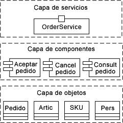

| Concepto: arquitectura orientada a servicios |
 |
|
| Elementos relacionados |
|---|
IntroducciónLas dificultades para crear soluciones de software en el ámbito de la empresa provienen de como mínimo cuatro fuentes principales de retos:
Para desarrollar soluciones en este contexto se requiere un enfoque de la arquitectura de software que ayude a los arquitectos a evolucionar sus soluciones de forma flexible y a reutilizar los esfuerzos existentes en el contexto de nuevas funciones que implementen rápidamente la funcionalidad empresarial a medida incluso que evoluciona la propia infraestructura de destino. Para ayudar a cubrir estas necesidades, muchas organizaciones están buscando reorganizar los recursos de la información como funciones sustancialmente independientes, funcionales y reutilizables que creen un entorno intrínsecamente adaptable. Al describir estas funciones reutilizables utilizando protocolos estándares abiertos, una organización puede crear servicios de autodescripción que se pueden utilizar independientemente de la tecnología subyacente. La independencia técnica permite que se utilicen los servicios en diferentes contextos para lograr la estandarización de los procesos, las reglas y las políticas empresariales. En la actualidad, se reconoce ampliamente que este enfoque de los sistemas de TI, al que se hace referencia como Arquitectura orientada a servicios (SOA), tiene el potencial de mejorar de forma radical la capacidad de respuesta de las organizaciones de TI y empresariales. Pasar a una SOA supone muchos retos para una organización. Los conceptos orientados a servicios, por ejemplo, introducen nuevos términos y modelos y promueven la interoperabilidad y la integración de procesos. Además, integrar las diversas capas de tecnología subyacentes que constituyen una SOA puede ser una tarea muy compleja. Las organizaciones de TI suelen encontrarse a menudo que necesitan realizar cambios en su enfoque, actualizaciones de su conjunto de habilidades, nuevas funciones en sus entornos de desarrollo y cambios en los procesos de diseño de soluciones. Para completar el panorama, el concepto de SOA es un fenómeno reciente y sus características están en continua evolución. No obstante, existen varias perspectivas claras sobre lo que es una SOA y el rol de una SOA para hacer frente a las cuestiones clave relacionadas con las soluciones de software de empresa. SOA como infraestructura de tecnologíaLos sistemas están compuestos de colecciones de servicios que realizan llamadas en operaciones definidas a través de sus interfaces de servicio. Muchas organizaciones expresan ahora sus soluciones en términos de servicios y sus interconexiones. El objetivo final de adaptar una SOA es lograr flexibilidad para el negocio y dentro de la TI. Se ha definido una serie de tecnologías importantes para dar soporte a un enfoque de SOA, en particular cuando los servicios se distribuyen en múltiples máquinas y se conectan a través de Internet o una intranet. Estos enfoques de servicios web se basan en protocolos de comunicación entre servicios tales como SOAP; permiten que se registren las interfaces de servicios web (expresadas en el Lenguaje de definición de servicios web – WSDL) en directorios públicos y que se busquen en repositorios UDDI (Universal Description, Discovery and Integration); y que compartan información en documentos definidos en el XML y que están descritos en esquemas estándares. Además, los estándares se desarrollan para abordar entre otras, las áreas adicionales de política, seguridad, fiabilidad y detección; esta familia de estándares se suele conocer como la "familia WS-*". Pero SOA no se reduce simplemente a un conjunto de estándares y descripciones de servicios igual que la orientación de objetos no se reduce simplemente a un conjunto de jerarquías de clases. Efectivamente, es posible crear una SOA que no utilice tecnología de servicios web y es posible utilizar la tecnología de servicios web de forma que no se considere orientada a servicios. Hay mucho más que explorar para entender por qué el punto de vista orientado a servicios añade valor al negocio y cómo se diseñan, implementan, despliegan y gestionan las soluciones orientadas a servicios. [Es más, SOA no equivale a WS] SOA como infraestructura conceptual de diseñoLa creación de soluciones para SOA significa replantear los tipos de sistemas que se crean actualmente, reconsiderar las habilidades en las organizaciones y redefinir los modos en los que los miembros de los equipos colaboran. Y lo que es más importante, adoptar una orientación de servicios en el desarrollo de soluciones requiere una revisión más profunda de su impacto sobre cómo se diseñan las soluciones, qué significa ensamblarlas a partir de servicios diversos y cómo se despliegan, gestionan y evolucionan las soluciones orientadas a servicios. Un cambio clave en esta tendencia es que el término "aplicación" tal como lo hemos conocido es cada vez más problemático a medida que la aplicación pasa de ser el centro de todos los proyectos a centrarse en la cartera de servicios en la que se basa un negocio. En este aspecto, podemos pensar que esta tendencia de proyectos orientados a aplicaciones a proyectos orientados a servicios significa pasar del diseño de un conjunto integrado verticalmente de componentes que conforman una aplicación al diseño de un conjunto horizontal de servicios. En el futuro, vemos que el término aplicación quedará relegado a la descripción de una capa pequeña de lógica empresarial específica próxima a los servicios de interacción de usuarios que orquestan el conjunto de servicios empresariales y de infraestructura que proporcionan el grueso del valor. Gartner hace referencia a este contexto más amplio de orientación de servicios como desarrollo de aplicaciones orientadas a servicios (SODA). Gartner resalta que los cinco principios clave de SODA son la composición, la gestión de procesos adaptativos, la interoperabilidad y la integración basadas en servicios, la detección y la descripción, y el mantenimiento rápido de las aplicaciones. Desde una perspectiva de proveedor de herramientas, estas áreas están vinculadas al soporte de tecnología que se ofrece en tres áreas: Ciclo de vida de SOA. Los principios de "Detección y descripción" y "Mantenimiento rápido de aplicaciones" hacen referencia al ciclo de vida de los servicios y a cómo se encuentran, se aplican, evolucionan y se mantienen. Los proveedores de herramientas están ofreciendo cada vez más modos de almacenar, catalogar, buscar y recuperar servicios. El soporte para la evolución continuada de los servicios es un aspecto crítico de esto, y que puede producir múltiples versiones de servicios. Plataforma de SOA y modelo de programación. El principio de interoperabilidad e integración basada en servicios hace referencia al modo en el que los servicios pueden conectarse, desplegarse y gestionarse en una plataforma de tiempo de ejecución específica. Los principales proveedores de plataformas están dando soporte a funciones orientadas a servicios directamente como parte de los tiempos de ejecución de middleware y están convirtiendo los modelos de programación de tiempo de ejecución en conceptos de servicio de superficie como elementos de primera clase. Como resultado de ello, las soluciones pueden concebirse, diseñarse, implementarse y gestionarse desde una única perspectiva basada en servicios. Prácticas de SOA y herramientas. Los principios de composición y gestión adaptativa de procesos hacen referencia a cómo se crean y se ensamblan los servicios en el contexto de resolver las necesidades cambiantes del negocio. Los proveedores de herramientas dan soporte a las aplicaciones de extracción existentes para detectar servicios potenciales, englobando la funcionalidad existente para hacer que estas funciones sean accesibles como servicios, la creación de nuevos servicios y conectar servicios conectando el comportamiento expuesto a través de sus interfaces. Para ello, es fundamental disponer de instrucciones claras y de las mejores prácticas para estructurar soluciones orientadas a servicios de forma repetitiva y predecible. Estas tres áreas son importantes para tener éxito en el desarrollo de soluciones orientadas a servicios. Deben abordarse para satisfacer las necesidades de una organización y crear de forma eficaz soluciones más flexibles que se ajusten mejor a los objetivos del negocio. SOA como enfoque holístico para soluciones que tienden puentes entre la empresa y la TIUno de los retos principales a los hay que enfrentarse en el desarrollo de soluciones de ámbito empresarial es conectar los requisitos específicos del dominio expresados por los analistas empresariales con las soluciones específicas de tecnología diseñadas por la organización de TI. Normalmente, la conexión entre estos dos mundos dispares no es buena. Las dos comunidades tienen conocimientos muy diferentes, utilizan diferentes conceptos y notaciones de modelado (en caso de que existan) y apenas comprenden la correlación entre estos conceptos. El uso de un enfoque orientado a servicios pretende ayudar a salvar las distancias entre los analistas empresariales y especialistas de líneas de negocio y los especialistas de TI tales como arquitectos, analistas de sistemas, integrados, diseñadores y desarrolladores. En particular, la integración de procesos, activos y productos finales en torno a un conjunto básico de servicios pretende conectar estos dos aspectos diferentes del sistema de forma clara y precisa. SOA ofrece una visión orientada a los servicios para ayudar a superar estos retos: Salvar la distancia entre la actividad empresarial y la TI. Es esencial alinear la vista empresarial de actividades y procesos con la tecnología que se utiliza para llevar a cabo partes de estas actividades. Esta alineación incluye la posibilidad de que los modelos empresariales lleven el desarrollo en sentido descendente y evolucionen los modelos empresariales y las soluciones de TI conjuntamente. El concepto de servicio es esencial para esta alineación. Los servicios y el planteamiento basado en servicios forman la base común que une a analistas empresariales, arquitectos de TI, integradores y desarrolladores. La naturaleza misma de los servicios, el nivel de granularidad y el nivel de encapsulación que promueven, les permite que estén mucho más alineados con los modelos de procesos empresariales que dirigen el negocio. Las prácticas de diseño comunes son esenciales para garantizar que los conceptos, los productos de trabajo y las tareas estén sincronizados en estas diferentes perspectivas. Finalmente, tener herramientas que pueden transformar de forma eficaz los modelos que representan el intento empresarial en implementaciones eficaces son muy importantes para salvar la distancia de la actividad empresarial y la TI. Soporte de los roles cambiantes en la organización de TI. El paso al planteamiento de servicios cambia las habilidades y la composición de los equipos de una organización. El interés del desarrollo se centra en buscar, definir, gestionar y ensamblar servicios, con descripciones arquitecturales que resaltan los acuerdos de nivel de servicio (SLA) y los protocolos entre servicios. El desglose tradicional de las funciones de herramientas en una línea de productos actual no es adecuada para este enfoque. Los diferentes miembros en las organizaciones de TI tendrán diferentes funciones. Por ejemplo, las habilidades que requieren roles existentes tales como arquitecto de software cambian para dar mayor importancia al ensamblaje y a la gestión de servicios mediante un conjunto diverso de proveedores de servicio. Asimismo, están surgiendo roles nuevos tales como especialistas de integración, que se centran en ensamblar una cadena de valores basados en servicios como soporte a los objetivos empresariales clave de una organización. Centrar el interés en activos y en la reutilización. Considerar los servicios como activos clave en el diseño de sistemas cambia la visión de una organizacion del valor de reutilización de estos servicios. Anteriormente, hemos tratado el paso del desarrollo vertical de un conjunto de componentes de aplicaciones a la integración horizontal de los componentes. Un aspecto valioso de ello es que los propios servicios están mucho más disponibles para su reutilización. De hecho, su combinación en nuevas posibilidades, su composición en nuevos servicios es uno de los principales factores del cambio. En muchas empresas, esta promesa de una mayor reutilización de una SOA justifica el coste asociado al diseño y al desarrollo de una cartera de servicios. Como resultado de ello, las tecnologías y las técnicas para la gestión y el control de activos y los modos repetitivos de capturar patrones para combinar activos, son cada vez más importantes. En un enfoque de desarrollo basado en activos, estos activos tiene un valor crítico para la organización y deben gestionarse y administrarse con cautela. La infraestructura del equipo para gestionar activos tiene un rol básico en este enfoque. Incrementar niveles de colaboración en y a través de los roles de los profesionales. El desarrollo de aplicaciones empresariales siempre ha reconocido que el desarrollo de software requiere personas que trabajen conjuntamente y centren su atención a lo largo de todo el ciclo de vida en gestionar activos compartidos, rastrear el producto de trabajo y compartir prácticas y procesos. La naturaleza colaborativa del desarrollo de software se está incrementando gracias a la mayor distribución geográfica de las organizaciones, la mejora de la comunicación en tiempo real entre las personas de los equipos y la incorporación del software como parte de iniciativas de desarrollo más amplias de sistemas. Cada vez más, el rol de las infraestructuras de desarrollo de software se verá como un entorno de desarrollo colaborativo para profesionales de software que promueven compartir y reutilizar servicios en todos los equipos. SOA como evolución de técnicas basadas en componentes y orientadas a objetosEn cualquier desarrollo de ingeniería de software, es muy fácil presuponer que uno puede aplicar las mismas técnicas y herramientas que han funcionado en proyectos anteriores. Esta tendencia a resolver problemas nuevos con soluciones obsoletas no es nuevo. Del mismo modo, a medida que los desarrolladores empezaron a crear aplicaciones basadas en componentes, intentaron abordar problemas utilizando su experiencia con el desarrollo orientado a objetos. Al adquirir mayor experiencia, se ha comprendido que los lenguajes y la tecnología orientada a los objetos son grandes maneras de implementar componentes, aunque haya que entender las concesiones resultado de las decisiones y la implementación. Las concesiones se centran en la herencia frente a la agregación para implementar el comportamiento polimórfico o el rediseño de bibliotecas de clases que puedan utilizar conjuntos de componentes en lugar de como base de una aplicación C++ monolítica. Del mismo modo, vemos que los componentes son el mejor modo de implementar servicios, aunque hay que entender que una aplicación basada en componentes ejemplares no supone necesariamente una SOA ejemplar. Hay una gran oportunidad para optimizar los desarrolladores de componentes y los componentes existentes de la empresa, una vez que se entienda el rol desempeñado por los servicios en la arquitectura de aplicaciones. La clave para realizar esta transición es darse cuenta de que un enfoque orientado a servicios implica una capa adicional de arquitectura de la aplicación. La imagen inferior muestra cómo las capas de tecnología pueden aplicarse a la arquitectura de aplicaciones para proporcionar más implementaciones sin detallar a medida que uno se acerca a los consumidores de la solución. El término acuñado para referirse a esta parte del sistema es "el límite de la aplicación", que refleja el hecho de que un servicio es gran forma de exponer una visión externa de un sistema, con la reutilización y la composición internas que utilizan el diseño de componentes tradicional. Una forma de examinar las diferencias entre objetos, componentes y servicios es el modo en el que se vinculan a su implementación; un objeto está estrechamente vinculado a su lenguaje de programación, los componentes están vinculados a cierto tiempo de ejecución o plataforma (COM, CORBA, J2EE, etc.) mientras que los servicios sólo están vinculados realmente al conjunto de estándares utilizados para describir su especificación.  En general, el paso del planteamiento orientado a objetos al planteamiento basado en componentes ha tardado 6 y 18 meses, a medida que los desarrolladores aprendían sobre esta nueva tecnología y sus requisitos. Con suerte, la tendencia a soluciones orientadas a servicios puede producirse más rápidamente. Para que esto suceda, los desarrolladores tendrán que entender los retos, las concesiones y las decisiones de diseño que permiten el desarrollo y la reutilización de componentes como soporte a las soluciones orientadas a servicios. |
© Copyright IBM Corp. 1987, 2006. Reservados todos los derechos. |